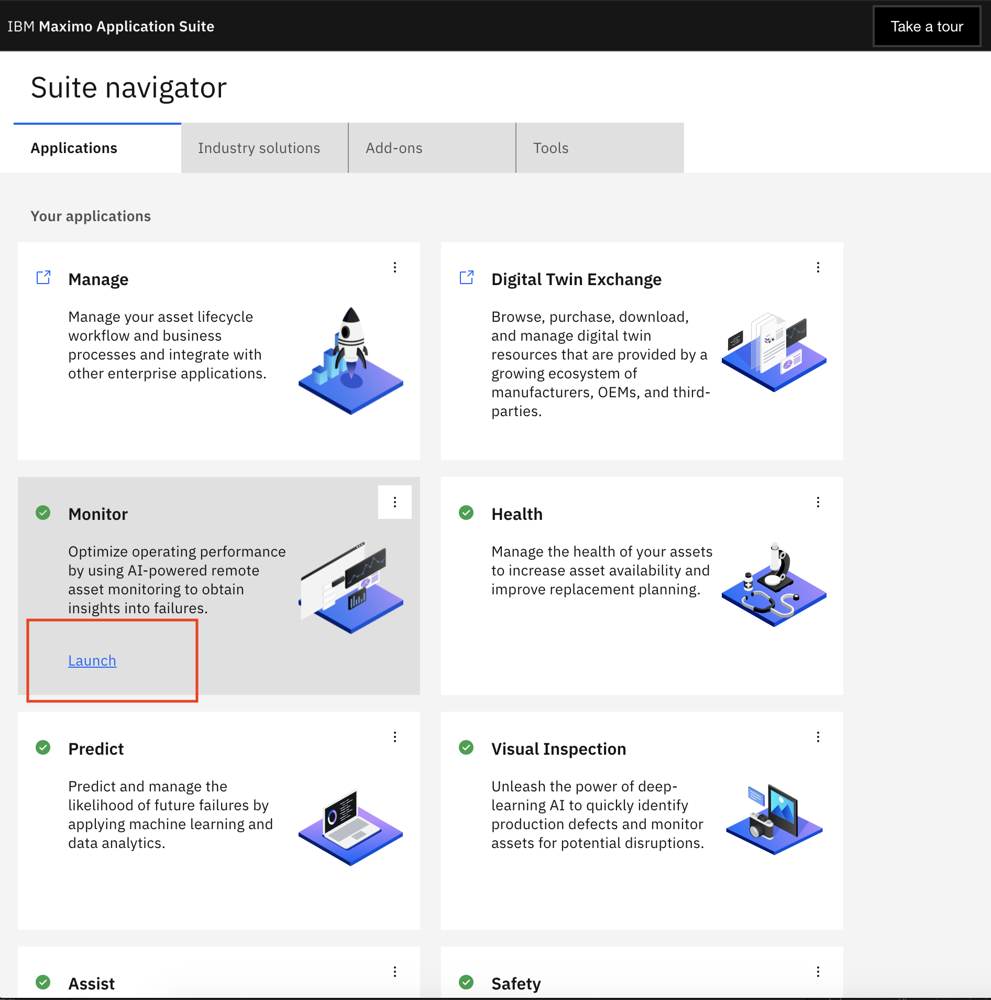
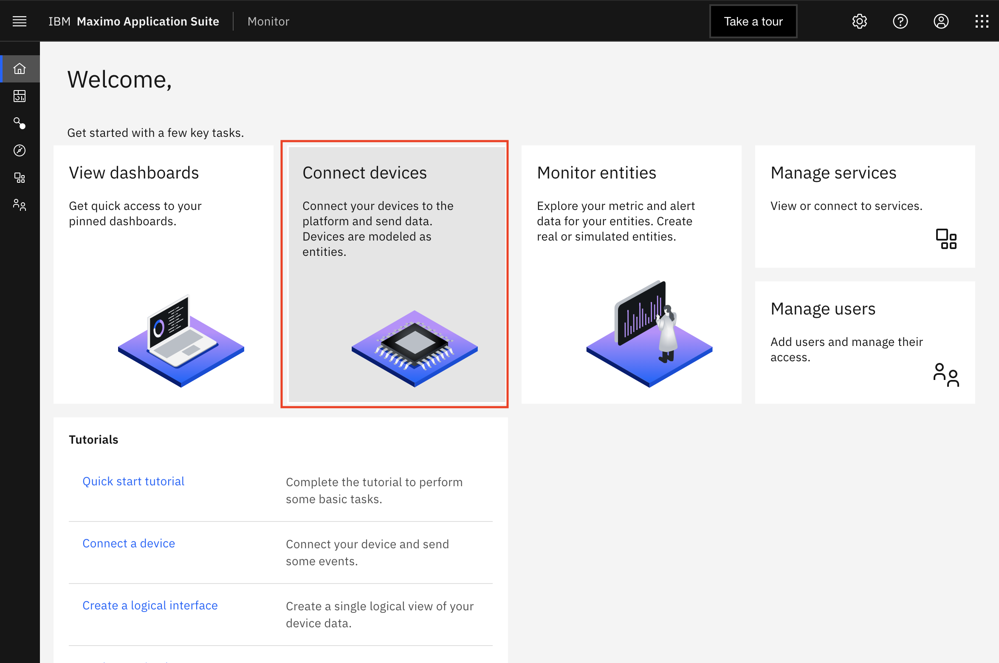
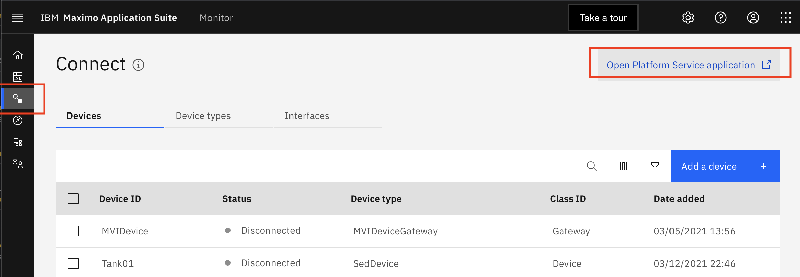
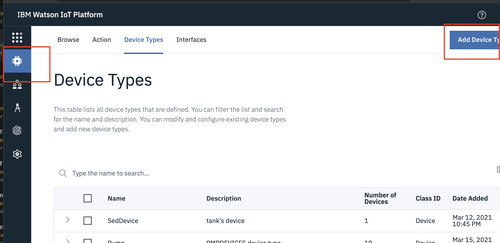
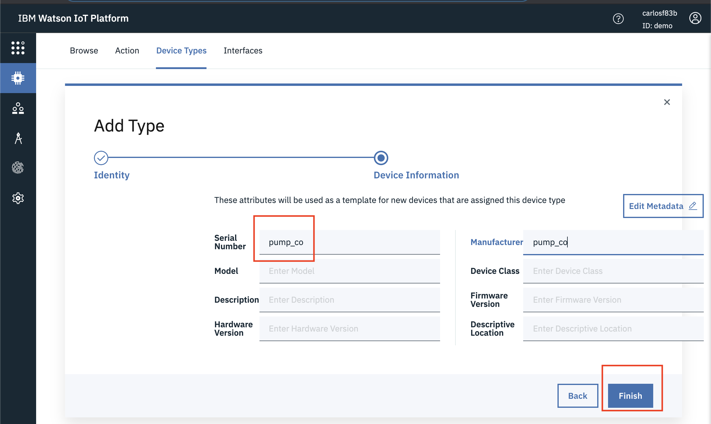

Setup Device Types
In this exercise you will create the pump Device Type and data in Monitor IOT Platform that will receive the simulated pump data in the lab. Create a Pump Device Type in Monitor.
You can create Device Type in the UI or Programmatically.
Create Pump Device Types in UI
To be able to ingest device data using Monitor you must first define the format of the data using a Device Type.
In this exercise you will, create a Device Type named pump_co and 2 Devices named 11111096 and
111137F8.
-
Login to Monitor from the
Maximo Application Suite Navigatorpage. Click
 -
Click
Connect devicestile or click On theConnect menu
 -
Click
Open Platform Service applicationin the top-right corner to open the Watson IoT Platform tenant associated with this Monitor tenant in a separate browser tab.  -
Go to the
Device Typesmenu, and clickAdd Device Type. 
Note
Make sure to replace co in the device type name with your own initials.
-
Enter
pump_coin the Name and Description fields - wherecoshould be replaced with your initials. Note that for the rest of this lab, ClickNext. -
Enter
pump_coin theManufacturerandDevice Classfields. Later you canDimensionsthat can be used in Monitor to filter and aggregate assets inSummary Dashboards. ClickFinishto save your changes.
